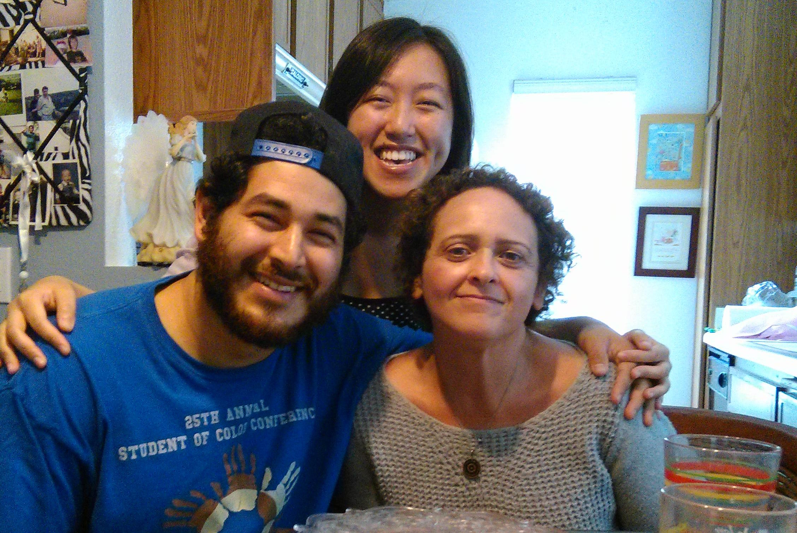

About Us

TROW Resources is a corporation and is awarded non-profit status by the IRS under Chapter 501(c) (3). We are a company that is excited to be God’s helpers of disabled children in the world. We want to first assist in the area of children with Autism and their families—especially underprivileged families. Our goal is to ease some of the burdens of these families in any way we can.
Our president, Christian, has a cognitive science and engineering background with a Bachelor’s degree in Cognitive Science-human computer interaction from UCSD and has worked with autistic children for two years. Our vice president, Pat, has 5 years’ experience as a therapeutic aide to autistic and other disabled children plus an additional 5 years teaching and working with children and literacy. In addition, she has over 20 college level classes in teaching and preschool education and management. She has a bachelor’s in accounting and master’s degree in management. She is awarded a certificate from the state of California that allows her to be a Preschool Site Supervisor.
We plan to start with a 12-child preschool specifically designed for Autistic children. Our focus will be on providing comfort and care and teaching developmentally appropriate communication, cognitive skills and social skills. This is a unique and highly personal approach that is not available at any traditional preschool facility. We offer a preschool service that is flexible and works to accommodate each child’s needs. Besides the two founders, we will have 3 employees with experience working with the population.We will utilize the child’s diagnosis and therapist recommendations and also continually observe and adapt to the child’s needs and so work on individual solutions for each child. This may include innovative methods of interaction, behavioral modification plans, and unique equipment designed for the child. We have innovative ideas for equipment and methods to help the children progress. So we hope to be able to assist the children not only in providing them a safe place to grow and learn, but eventually to also design and adapt equipment, devices, and methods to their unique needs. For example, a glove that uses vibration, sound, and other stimuli to divert a child’s attention when frustrated and prevent a loss of control that would sabotage the child’s learning during discreet trail training and other learning. We are nearly complete with the proto-type and are planning to evaluate its effectiveness and adapt it for use by children at our Center and beyond. Those devices that are especially helpful, we plan to sell to the leaders in the industry so that they can assist other children across the country. We are passionate about developing new methods of teaching as well and building a school where parents can also learn methods for teaching their children and coping with everyday life.
In the San Diego are there are 1,500 autistic children between the ages of 3 and 5 and they are not being helped. Only 2 autism preschools currently exist in the San Diego area and they are very selective in the types of children they accept. We plan to form a relationship with at least one of these schools and gain referrals from them of children they turn away. We are a non-profit organization and will be giving scholarships to our school as we begin operating and receive a flow of income from fees and contributions. In addition, some of the innovative ideas we have are for non-related innovations with the intention of using the profits from these projects to fund our school as well. As you can tell, we are very excited to begin our work helping children. If this goal touches you as well, we would be grateful and honored to receive your support.
Our president, Christian, has a cognitive science and engineering background with a Bachelor’s degree in Cognitive Science-human computer interaction from UCSD and has worked with autistic children for two years. Our vice president, Pat, has 5 years’ experience as a therapeutic aide to autistic and other disabled children plus an additional 5 years teaching and working with children and literacy. In addition, she has over 20 college level classes in teaching and preschool education and management. She has a bachelor’s in accounting and master’s degree in management. She is awarded a certificate from the state of California that allows her to be a Preschool Site Supervisor.
We plan to start with a 12-child preschool specifically designed for Autistic children. Our focus will be on providing comfort and care and teaching developmentally appropriate communication, cognitive skills and social skills. This is a unique and highly personal approach that is not available at any traditional preschool facility. We offer a preschool service that is flexible and works to accommodate each child’s needs. Besides the two founders, we will have 3 employees with experience working with the population.We will utilize the child’s diagnosis and therapist recommendations and also continually observe and adapt to the child’s needs and so work on individual solutions for each child. This may include innovative methods of interaction, behavioral modification plans, and unique equipment designed for the child. We have innovative ideas for equipment and methods to help the children progress. So we hope to be able to assist the children not only in providing them a safe place to grow and learn, but eventually to also design and adapt equipment, devices, and methods to their unique needs. For example, a glove that uses vibration, sound, and other stimuli to divert a child’s attention when frustrated and prevent a loss of control that would sabotage the child’s learning during discreet trail training and other learning. We are nearly complete with the proto-type and are planning to evaluate its effectiveness and adapt it for use by children at our Center and beyond. Those devices that are especially helpful, we plan to sell to the leaders in the industry so that they can assist other children across the country. We are passionate about developing new methods of teaching as well and building a school where parents can also learn methods for teaching their children and coping with everyday life.
In the San Diego are there are 1,500 autistic children between the ages of 3 and 5 and they are not being helped. Only 2 autism preschools currently exist in the San Diego area and they are very selective in the types of children they accept. We plan to form a relationship with at least one of these schools and gain referrals from them of children they turn away. We are a non-profit organization and will be giving scholarships to our school as we begin operating and receive a flow of income from fees and contributions. In addition, some of the innovative ideas we have are for non-related innovations with the intention of using the profits from these projects to fund our school as well. As you can tell, we are very excited to begin our work helping children. If this goal touches you as well, we would be grateful and honored to receive your support.